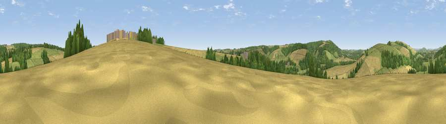

Viewpoint near Stourpaine
#32551 in England · top 64% of its area beats it · near StourpaineThe view, rendered

A 360° render of this exact spot computed from the terrain model, tree cover and land cover — summer colours, afternoon light, calibrated against photographs of famous viewpoints. Real trees, hedges and buildings will differ in detail.
The panorama
Grey silhouette: terrain skyline in each direction (720 bearings, Earth curvature and refraction included). Dashed green: skyline with trees (+15 m) and buildings (+8 m) as obstacles. Blue strip: how far the ground is visible on each bearing.
Where the view opens
Wedge length = distance to the farthest visible ground on that bearing (vegetation-aware). Rings at 10, 25 and 50 km.
What fills the view
43% grassland · 34% cropland · 22% woodland ·
Angular shares of the visible panorama (visual magnitude), not map area. Landscape diversity 0.48 (0–1 Shannon).
Key numbers
More beautiful places nearby
The staircase of upgrades: each row has a higher view potential than everything closer. Driving times are estimates from straight-line distance, calibrated against real road routing — check an actual route before setting out.
| Place | Direction | Drive | Score |
|---|---|---|---|
| Viewpoint near Stourpaine | E · 0 km | ~2 min | 47.7 |
| Viewpoint near Stourpaine | NW · 2 km | ~4 min | 57.5 |
| Hambledon Hill | NW · 3 km | ~7 min | 72.7 |
| Hambledon Hill | NW · 4 km | ~8 min | 74.6 |
| Viewpoint near Berwick St John | NNE · 12 km | ~23 min | 78.2 |
| Viewpoint near Kimmeridge | S · 28 km | ~45 min | 82.9 |
| Viewpoint near Kimmeridge | S · 28 km | ~45 min | 84.1 |
| Whiteway Hill | S · 29 km | ~46 min | 85.0 |
50.88821, -2.18939 · source: screening · position refined by local search. Computed location — check access rights before visiting.